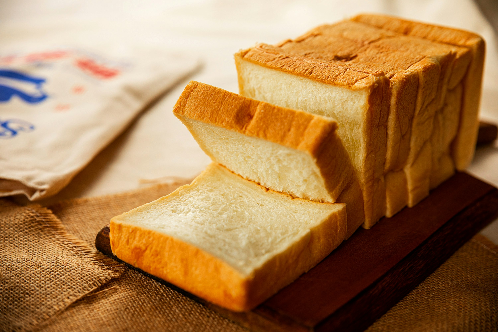

Bread Recipe
Home

Description
Bread is made with flour and yeast. Its baked to get fluffy and crusty outside.
Ingredients
- Yeast
- Salt
- Flour All-Purpose
- Sugar
Steps
- Mix Yeast and sugar with water and let it sit for 5 minutes
- Mix salt and flour
- Combine flour and yeasted water and knead until you make a soft dough thats not sticky
- Let it sit until its big
- Bake at 220 deegres C